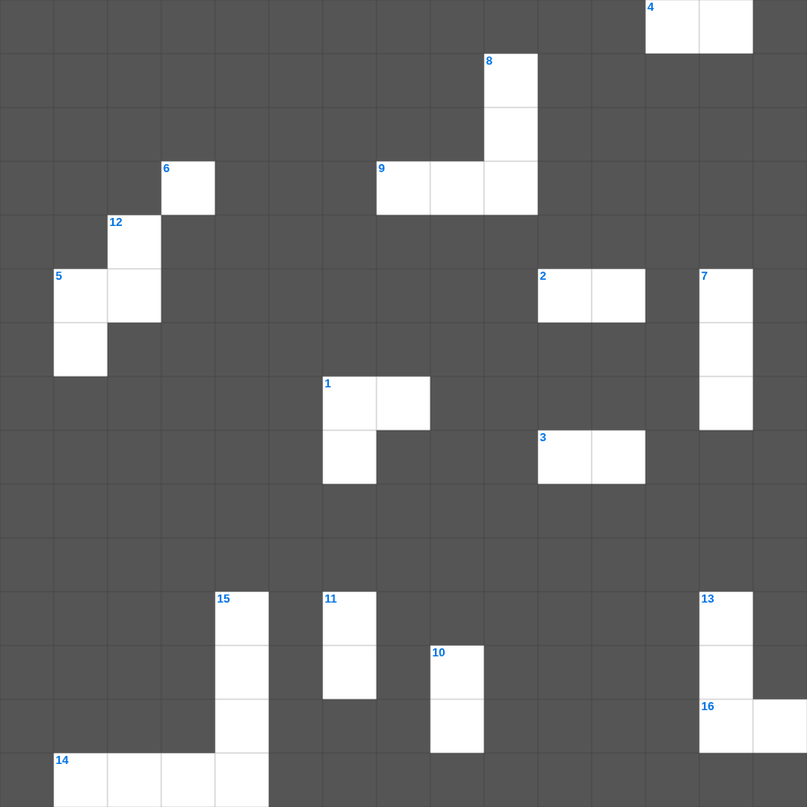

욥기: 고난 중의 인내
📌 서비스 정의
십자가로세로는 교회 주보와 주일학교에서 사용할 수 있는 성경 기반 가로세로 퍼즐 서비스입니다. 성경 인물, 사건, 핵심 구절을 바탕으로 제작되었습니다. 온라인 풀이 및 인쇄 기능을 제공합니다.
📖 욥기란?
욥기는 의롭고 경건한 사람 욥이 갑작스러운 고난을 당하면서 겪는 고통과 친구들과의 논쟁, 그리고 하나님과의 만남을 통해 신앙의 본질을 다루는 시가서입니다.
📚 욥기의 주요 사건·주제
욥의 재산과 자녀를 잃음 · 세 친구와의 논쟁 · 엘리후의 발언 · 하나님의 폭풍 속 응답 · 욥의 회복
욥기의 말씀을 퀴즈로 배우는 욥기 가로세로 퀴즈입니다. 가로 힌트와 세로 힌트를 보고 20개의 단어를 맞춰보세요. 인쇄도 가능하고 정답 확인도 바로 되니 소그룹 모임이나 가정 예배 시간에도 활용하실 수 있습니다.

📝 가로 힌트
1. 욥이 회개한 후 받은 복
2. 욥에게 나타난 회오리
3. 욥의 친구 빌닷
4. 욥이 앉았던 것
4. 욥의 양과 소와 낙타
5. 욥이 받은 재앙의 종류
9. 욥이 말한 나의 구속자
14. 욥이 회복 후 받은 자녀
16. 욥의 친구 엘리바스와 빌닷과 이 사람
📝 세로 힌트
1. 욥이 회복받은 재산
4. 욥이 앉아 울부짖은 재
5. 욥이 입은 종기의 재앙
6. 욥이 고난 중에도 이것하지 않았다
7. 하나님이 욥에게 말씀하신 폭풍
8. 욥이 고백한 나의 중보자
10. 욥의 소유로 잃은 것
11. 욥을 시험하자고 제안한 존재
12. 욥을 친 병
13. 욥의 재산으로 잃은 가축
15. 욥의 자녀 수
🧩 이 퍼즐에서 배우는 내용
이 퍼즐은 욥기: 고난 중의 인내의 핵심 단어와 개념을 자연스럽게 복습할 수 있도록 구성되었습니다. 주일학교 수업이나 개인 성경공부에서 학습 내용을 점검하는 용도로 바로 활용할 수 있습니다.
🧑🏫 교회 교육 자료 활용
이 퍼즐은 주일학교 교재 추천 자료로 활용할 수 있고, 주일학교 주보에 넣기 좋은 분량으로 구성되어 있습니다. 수업용 주일학교 교안에 활동지로 붙이거나, 예배 후 복습용 주일학교 공과교재로 바로 사용할 수 있습니다.
🏷️ 키워드
욥기 가로세로 퀴즈, 욥기, 십자가로세로, 성경퀴즈, 말씀퀴즈, 가로세로퍼즐, 주일학교 교재 추천, 주일학교 주보, 주일학교 교안, 주일학교 공과교재